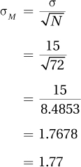
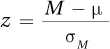
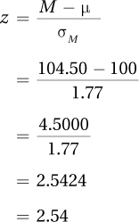
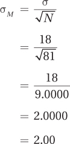
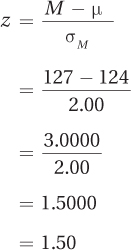

6.2 Hypothesis Testing in Action
 StatClips: Hypothesis Testing Introduction, Part II, Acid Rain ExampleVideo on LaunchPad
StatClips: Hypothesis Testing Introduction, Part II, Acid Rain ExampleVideo on LaunchPad
StatClips: p-Value InterpretationVideo on LaunchPad
Let’s put the 10 facts about hypothesis testing to work. Let’s suppose a psychologist, Dr. Pell, wonders whether children who are adopted differ in intelligence from nonadopted children. To explore this, she obtains a random sample of 72 children from the population of adopted children in the United States and gives each of them an IQ test. She finds that the mean IQ of these 72 children is 104.5. Knowing that the average IQ for children in the United States is 100 with a standard deviation of 15, can she conclude that adopted kids differ in intelligence from the general population?
183
It is tempting to say that the answer is obvious. 104.5 is a bigger number than 100, so it is true that adopted kids differ from the general population of kids. But, that’s not how statisticians think.
Remember sampling error, introduced in Chapter 5? Because of sampling error, researchers don’t expect a sample mean to be exactly the same as the population mean. With a population mean for IQ of 100, Dr. Pell can expect the sample mean to be close to 100, but not exactly 100.
So, here’s the question for Dr. Pell to ask: Is 104.5 close enough to 100 that sampling error can explain it? If so, then there’s no reason to think adopted kids differ from the average IQ. However, if sampling error fails as a reasonable explanation for the difference, then she can conclude that adopted kids differ in intelligence.
The Six Steps of Hypothesis Testing
Learning how to complete a statistical test is like learning how to cook—it’s better to follow a recipe. That’s why we’re going to use a six-step “recipe” for hypothesis testing. Here are the six steps:
Step 1 Test: Pick the right statistical test.
Step 2 Assumptions: Check the assumptions to make sure it is OK to do the test.
Step 3 Hypotheses: List the null and alternative hypotheses.
Step 4 Decision rule: Find the critical value of the statistic that determines when to reject the null hypothesis.
Step 5 Calculation: Calculate the value of the test statistic.
Step 6 Interpretation: State in plain language what the results mean.
Here’s a mnemonic to help remember the six steps in order: “Tom and Harry despise crabby infants.” The first letters of the six words in the mnemonic stand for “Test,” “Assumptions,” “Hypotheses,” “Decision rule,” “Calculation,” and “Interpretation.” First, let’s walk through the steps, then follow Dr. Pell as she applies them to the adoption IQ study.
184
Step 1 Pick a Test
The first step in hypothesis testing is picking which test to use. There are hundreds of statistical tests, each designed for a specific purpose. Choosing the correct test depends on a variety of factors such as the question being asked, the type of study being done, and the level of measurement of the data. In Chapter 16, there are flowcharts that guide one through choosing the correct hypothesis test. Feel free to peek ahead and take a look at them.
Step 2 Check the Assumptions
All statistical tests have assumptions, conditions that need to be met before a test is completed. If the assumptions aren’t met, then researchers can’t be sure what the results of the test mean.
Here’s a nonstatistics explanation about the role of assumptions. In this day and age, athletes are tested for performance-enhancing substances. The drug test depends on a number of assumptions. For the test to be meaningful, it is assumed that the sample being tested is the athlete’s, that the sample was stored at the right temperature after it was taken, that no one has tampered with the sample, and that the machine being used to test it is correctly calibrated.
Imagine that an athlete wins a race, provides a urine sample, and it is tested on an incorrectly calibrated machine. The assumption that the machine is calibrated correctly has been violated. Suppose the results indicate that the urine does not test positive for performance-enhancing substances. Is that true? Maybe it is, maybe it isn’t. When an assumption is violated, it is still physically possible to complete the test. But, one should not because it is impossible to interpret the results.
As hypothesis tests are covered, their assumptions will be listed to make sure one knows the conditions that must be met to proceed with the test. There are two types of assumptions: not robust and robust. A nonrobust assumption has to be met for the test to proceed. If a nonrobust assumption is violated, a researcher should stop proceeding with the planned statistical test. A robust assumption can be violated, to some degree, and the test can still be completed and interpreted.
Here is a way to think about the difference between the two assumptions. People can be described as being in “robust” health or not. Imagine that Carl is not in robust health––he has a compromised immune system. In fact, his health is so bad that he is in an isolation ward in the hospital. One day he gets a visitor who has the flu and who sneezes while in the room. Carl, whose health has just been violated, is likely to get the flu. In contrast, Bethany is in robust health. One day her roommate, who has the flu, sneezes directly in her face. Bethany, with a strong immune system, is able to fight off this violation and stay healthy. However, there is a limit to what Bethany's immune system can handle. If one roommate with the flu sneezes in her face, by mistake Bethany uses the toothbrush of another roommate with the flu, and it turns out that Bethany's significant other—whom she spends a lot of time kissing—also has the flu, well, that may be too many violations for her immune system to handle. Even a robust assumption will break if it is violated too much.
Step 3 List the Hypotheses
Step 3 involves listing the null hypothesis and the alternative hypothesis. Hypotheses can be for two-tailed tests (also called nondirectional tests) or one-tailed tests (directional tests). A two-tailed hypothesis test doesn’t indicate whether the explanatory variable (adoption in our example) has a positive or negative impact on the outcome variable (IQ), just that it has an impact. An advantage of a two-tailed test is that it allows a researcher to test for an effect in either direction, that children who are adopted end up as more intelligent than average or as less intelligent than average. Two-tailed tests are the norm and are used much more frequently than one-tailed tests.
185
When, in advance of collecting any data, a researcher has an expectation about the direction of the impact of the explanatory variable, a one-tailed hypothesis test is called for. One-tailed tests predict that the results will turn out in a certain direction. An advantage to using one-tailed tests is that it is easier to reject the null hypothesis and be forced to accept the alternative hypothesis.
With the current example, it seems reasonable to think a one-tailed test is called for because it is already known that the mean IQ of this sample of adopted children is above average. But the question—do adopted children differ in intelligence from the average—was formulated before any data were collected. The question doesn’t specify a direction for the difference, so a two-tailed test is called for. Changing the question after looking at the data is not how statisticians operate.
Step 4 Set the Decision Rule
Setting the decision rule involves finding the critical value of the test statistic. The critical value is the value that the test statistic must meet or exceed in order to reject the null hypothesis. What the critical value is depends on a number of factors, such as how willing the researcher is to draw the wrong conclusion and how many cases there are.
186
Just as it is not fair to change from a two-tailed test to a one-tailed test after looking at the results, the decision rule is made in advance. That way, if the results are just short of the point where the null hypothesis is rejected, the researcher won’t be tempted to slide the critical value over a bit to get the results he or she desires.
Step 5 Calculate the Test Statistic
Calculating the test statistic is the most straightforward of the six steps for hypothesis testing. Plug the right numbers into a formula, and push the right buttons in the right order on the calculator: that’s how to calculate the test statistic.
Step 6 Interpret the Results
Interpreting the results is the reason statistical tests are done. In Step 6, the researcher explains, in plain language, what the results are and what they mean. Interpretation is a human skill.
Interpretation involves answering questions about the results. For example, in this chapter, we’ll ask whether the null hypothesis was rejected. In future chapters, more interpretation questions will be added and the questions will change slightly from hypothesis test to hypothesis test. When there are multiple questions, they build on each other, so a researcher gains a greater understanding of the results. It is possible to stop after any question with enough information to offer an interpretation, but the more questions answered, the better a researcher will understand the results.
187
There are four parts to writing an interpretation:
Recap why the study was done.
Provide the main factual results, for example, the mean scores for the control group and the experimental group.
Explain what the results mean.
Make suggestions for future research.
This four-part guide to writing an interpretation is presented in Table 6.2. It may look like interpretations will be long and detailed, but short and clear is better. For many studies, a good interpretation can be accomplished in one paragraph of four or five sentences.
The Single-Sample z Test
188
Now that we’ve covered the general logic behind hypothesis testing, let’s move on to the specific steps of the single-sample z test.
Step 1 Pick a Test. The single-sample z test is the test to use to see whether adopted children differ in intelligence from the general population. Dr. Pell has selected it because the single-sample z test is used to compare a sample mean to a population mean when the standard deviation of the population is known. (It is known that the population standard deviation, σ, for IQ is 15.)
Step 2 Check the Assumptions. The assumptions for the single-sample z test are listed in Table 6.3. The table also notes whether the assumptions are robust or not.
Random sample: The first assumption, that the sample is a random sample from the population, is not violated. In the IQ example, the sample was a random sample from the population of adopted children. This is a robust assumption, so even if the sample were not a random one, we could still proceed with the test. One just needs to be careful about the population to which one generalizes the results.
Independence of observations: The second assumption is that the observations within the group are independent. This assumption means that the scores of cases in the sample aren’t influenced by other cases in the sample. In the IQ example, the participants were randomly sampled, each case was in the sample only once, and each case was tested individually, so this assumption was not violated. This is not a robust assumption, so if the cases were not independent, we would not be able to proceed with the test.
Normality: The third assumption is that the dependent variable is normally distributed in the population. Intelligence is one of the many variables that psychologists assume to be normally distributed, so that assumption is not violated. This is also a robust assumption. So if it were violated, as long as the violation is not too great, we would still be able to proceed with the test.
189
With no assumptions violated, Dr. Pell can proceed with the planned test.
A Common Question
Q Suppose a teacher has developed a new way of teaching math and then tests the new method with three different groups, each with five students being taught together. When he uses the final exam to evaluate his new method, should he treat the data as 15 scores, one from each student, or three scores, one from each group?
A To avoid violating the independence of observations assumption, this should be treated as three scores, each score the mean of the five students taught together in a group. However, few researchers are this rigorous. Researchers worry more about violating this assumption by including the same participant in a study twice.
Step 3 List the Hypotheses. With a two-tailed test, it is easier to generate the null hypothesis first and the alternative hypothesis second. The null hypothesis is going to be (1) a statement about the population, (2) a negative statement, and (3) a specific statement. All of these conditions are met by
H0: μAdoptedChildren = 100
Dr. Pell’s null hypothesis says that the population of adopted children has a mean IQ of 100.
Because it is about μ, the population mean, it is a statement about a population.
It is a negative statement because it says that the intelligence of adopted children is not different from the mean IQ for the population of children in general.
It is a specific statement because it says the population mean is exactly 100.
Next, Dr. Pell needs to state the alternative hypothesis. The alternative hypothesis has to be mutually exclusive to the null hypothesis, and the two hypotheses together have to be all-inclusive. Further, the alternative hypothesis is not going to make a specific prediction. The alternative hypothesis is just going to say that the null hypothesis is wrong. This means that the alternative hypothesis states the population mean for adopted children is something other than 100:
H1: μAdoptedChildren ≠ 100
Step 4 Set the Decision Rule. Hypothesis testing works by assuming that the null hypothesis is true. Assume that the null hypothesis, μ = 100, is true and imagine taking hundreds and hundreds of repeated random samples of size 72 from the population of adopted children. For each sample, calculate a mean and then make a sampling distribution for all the means from all the samples. Thanks to the central limit theorem, three things are known about this sampling distribution: (1) the sampling distribution of the mean will be centered at 100, (2) it will have a normal shape, and (3) its standard deviation, called the standard error of the mean, can be calculated using Equation 5.1. For the adoption IQ example, this would be
190

The sampling distribution of the mean that should occur if the null hypothesis is true is shown in Figure 6.1. Note that it has a normal shape, is centered around the population mean of 100, and that IQ scores on the X-axis are marked off by the size of the standard error of the mean, 1.77.
Now, divide the sampling distribution into two parts (Figure 6.2). The middle section is called the common zone, because it is the section in which sample means commonly fall. The two extreme sections form the rare zone because it is the part of the sampling distribution in which it is rare that a sample mean falls.
Next, place the observed sample mean, 104.5, in the sampling distribution of the mean.
If the observed sample mean falls in the common zone, there’s no reason to question the null hypothesis. A common result, what is expected to happen if the null hypothesis is true, did happen.
191
If the observed sample mean falls in the rare zone, then an unusual event has happened. In this situation, by the logic of hypothesis testing, the null hypothesis is rejected and the researcher is forced to accept the alternative hypothesis as true. As the alternative hypothesis is what the researcher believes to be true, he or she is happy to be “forced” to accept it.
The line drawn between the common zone and the rare zone is called, as was noted above, the critical value. The critical value of z, abbreviated zcv, depends on how small the researcher wants the rare zone to be. The convention most commonly used in statistics is to say that something that happens 95% of the time is common and something that happens 5% of the time or less is rare. This means that the common zone is the middle 95% of the sampling distribution, and the rare zone is the extreme 5% of the sampling distribution. Notice that the rare zone is two-tailed, with 2.5% at the very top (the right-hand side) of the sampling distribution and 2.5% at the very bottom (the left-hand side) of the distribution. This is why the test is called a two-tailed test—the rare zone falls in both sides (tails) of the sampling distribution.
In Chapter 4, it was found that the z scores of ±1.96 marked off the middle 95% of a normal distribution from the extreme 5%. Now, the z scores of ±1.96 will be used as the critical values, zcv, for the single-sample z test. Figure 6.2 shows how the critical values divide the sampling distribution of the expected outcomes into common and rare zones. Here is the decision rule:
If the z score calculated in Step 5 (the next step) is less than or equal to –1.96 or if the z score is greater than or equal to 1.96, the researcher will reject the null hypothesis.
Written mathematically, this is: if z ≤ –1.96 or if z ≥ 1.96, then reject H0.
- If the z score calculated in Step 5 is greater than –1.96 and less than 1.96, then the researcher will fail to reject the null hypothesis.
Written mathematically: if –1.96 < z < 1.96, then fail to reject H0.
Notice that the critical value itself is part of the rare zone. If z = –1.96 or z = 1.96, then the researcher will reject the null hypothesis.
192
The size of the rare zone, expressed as a probability, is the alpha level of the test. The alpha level, or alpha, is the probability that a result will fall in the rare zone and the null hypothesis will be rejected when the null hypothesis is really true. Alpha levels are also called significance levels.
When statisticians discuss alpha levels, they use proportions, not percentages. So in this example, alpha is set at .05. Alpha is abbreviated with a lowercase Greek letter, α, so one would write, “α = .05.” This means that the researcher considers a rare event something that happens no more than 5% of the time.
The critical value that is the dividing line between the rare zone and the common zone depends on (1) whether the researcher is doing a one-tailed or a two-tailed test and (2) what alpha level is selected. The most commonly used options for a single-sample z test are shown in Table 6.4.
Step 5 Calculate the Test Statistic. The test statistic to be calculated is a z value. So, Step 5 involves turning the observed sample mean of 104.50 into a z score. The formula for calculating the z value for a single-sample test is shown in Equation 6.1.
Equation 6.1 Formula for the Single-Sample z Test

where z = the z score
M = the sample mean
μ = the population mean
σM = the standard error of the mean (Equation 5.1)
Earlier, using Equation 5.1, the standard error of the mean for the adoption IQ example was calculated as σM = 1.77. With that value, and with M = 104.5 and μ = 100, Dr. Pell can calculate the value of z for the single-sample z test for the adoption IQ study:
193

Having calculated z = 2.54, this step is over.
Step 6 Interpret the Results. In interpreting the results, plain language is used to explain what the results mean. In this chapter, we’ll start with the most basic interpretative question, “Was the null hypothesis rejected?”
This is addressed by comparing the observed value of the test statistic, 2.54, to the critical value, ±1.96. Which of the following statements generated in Step 4 is true?
Is either 2.54 ≤ –1.96, or is 2.54 ≥ 1.96?
Is –1.96 < 2.54 < 1.96?
The first statement is true as 2.54 is greater than or equal to 1.96. This means that the results fall in the rare zone and the null hypothesis is rejected. (To help visualize the results falling in the rare zone, see Figure 6.3.) By rejecting the null hypothesis, Dr. Pell must accept the alternative hypothesis and conclude that the population mean is something other than 100.
It is possible to go a step beyond just saying that the population mean of IQ for adopted children is something other than 100. It is possible to comment on the direction of the difference by comparing the sample mean to the population mean. The sample mean of 104.5 was above the general population mean of 100, so Dr. Pell can conclude that the population of adopted children has an average intelligence that is higher than 100.
194
The terms “statistically significant” and “not statistically significant” are commonly used in reporting results. Statistically significant means that a researcher concludes the observed sample results are more different from the null-hypothesized population value than would be expected by chance. With the adoption IQ example, Dr. Pell could state that the observed mean of 104.5 is “statistically significant” or “statistically different from 100.”
It is also common to report the results in APA format. APA format indicates what test was done, how many cases there were, what the value of the test statistic was, what alpha level was selected, and whether the null hypothesis was rejected. In APA format, Dr. Pell would report the results for the adoption IQ study as
z (N = 72) = 2.54, p < .05
z tells what test was done, a z test.
N = 72 gives the sample size.
2.54 is the value of the test statistic that was calculated.
.05 refers to the alpha level. (Because it is associated in APA format with the letter p, for probability, it is often referred to as the p value.)
p < .05 informs the reader that the null hypothesis was rejected.
A Common Question
Q What does p < .05 mean?
A p < .05 means that the observed result is a rare result as the probability of it happening is less than .05 if the null hypothesis is true. If a researcher fails to reject the null hypothesis, he or she would write p > .05. This means that the result is a common occurrence—it happens more than 5% of the time—when the null hypothesis is true.
Here is what the psychologist, Dr. Pell, wrote for her interpretation. Note how she follows the four-point interpretation template from Table 6.2: (1) indicating what was done, (2) providing some facts (the sample and population means as well as the z test results), (3) telling what the results mean, and (4) making a suggestion for future research:
In this study, the intelligence of adopted children was compared to the IQ of the general population of children in the United States. The mean IQ of a random sample of 72 adopted children in the United States was 104.5. Using a single-sample z test, their mean of 104.5 was statistically significantly different from the population mean of 100 (z (N = 72) = 2.54, p < .05). This study shows that adopted children have a higher average IQ than children in general. As adoptive parents are carefully screened before they are allowed to adopt, future research may want to explore the role that this plays in the higher intelligence of their children.
195
Worked Example 6.1
Let’s practice with hypothesis testing and the single-sample z test, this time with an example where the null hypothesis is not rejected. Imagine a psychic who claimed he could “read” blood pressure. A public health researcher, Dr. Levine, tested the man’s claim by asking him to select people with abnormal blood pressure. The psychic picked out 81 people. Dr. Levine took their blood pressures and the average systolic blood pressure for the sample, M, was 127. From previous research, Dr. Levine knew that the population mean, μ, for systolic blood pressure was 124 with a population standard deviation, σ, of 18.
The sample mean in this study, 127, is three points higher than the population mean. Is this different enough from normal blood pressure to support the psychic’s claim that he can read blood pressure? Did he find people with higher than average blood pressure? Or, can the deviation of 127 from 124 be explained by sampling error?
Step 1 Pick a Test. Comparing a sample mean to a population mean when the population standard deviation is known calls for a single-sample z test.
Step 2 Check the Assumptions. Table 6.3 lists the assumptions for the single-sample z test:
The sample is not a random sample from the population of people the psychic considers to have high blood pressure, so the first assumption is violated. This is a robust assumption, however, so it can be violated and the test still completed. Dr. Levine will need to be careful about the population to which he generalizes the results.
Each participant takes part in the study only once. There’s no evidence that the 81 observations influence the measurement of each other’s blood pressure. The second assumption, independence of observations, is not violated.
Eighty-one cases is a large enough sample to graph its frequency distribution. If the distribution looks normal-ish, it seems reasonable to assume that blood pressure is normally distributed in the larger population. In this scenario, the third assumption, normality, is not violated.
With no nonrobust assumptions violated, Dr. Levine can proceed with the planned test.
Step 3 List the Hypotheses. The null hypothesis states that the psychic is not able to read blood pressure. As a result, the mean blood pressure of the people he picks should be no different from the mean blood pressure of those with normal pressure. This is stated mathematically as
H0: μPsychicSelected = 124
The null hypothesis and the alternative hypothesis, together, have to be all-inclusive and mutually exclusive. The alternative hypothesis will state that the mean blood pressure in the population of people the psychic selects is different from the mean normal systolic blood pressure of 124:
H1: μPsychicSelected ≠ 124
196
Step 4 Set the Decision Rule. Dr. Levine wants to do a two-tailed test and has set alpha at .05. According to Table 6.4, the critical value of z is ±1.96. If the value of z calculated in the next step is less than or equal to –1.96 or greater than or equal to 1.96, the researcher will reject the null hypothesis. If z is greater than –1.96 and less than 1.96, he will fail to reject the null hypothesis. Figure 6.4 displays the rare and common zones for this decision.
Step 5 Calculate the Test Statistic. In order to calculate the z value, Dr. Levine will first use Equation 5.1 to calculate the standard error of the mean:

Now that the standard error of the mean is known, Dr. Levine can use Equation 6.1 to calculate the z value:

197
Step 6 Interpret the Results. Which of the following two statements is true?
Is either 1.50 ≤ –1.96, or is 1.50 ≥ 1.96?
Or, is –1.96 < 1.50 < 1.96?
The second statement is true as 1.50 falls between –1.96 and 1.96. Dr. Levine has failed to reject the null hypothesis. Figure 6.5 shows how the observed value of the test statistic, 1.50, falls in the common zone.
The results are not statistically significant. Not enough evidence exists to conclude that this sample mean, 127, is statistically different from 124. Because there is not sufficient evidence of a difference, the direction of the difference doesn’t matter.
In APA format, a researcher indicates failure to reject the null hypothesis by writing “p >.05.” (.05 is used because alpha was set at .05.) This indicates that the value of the test statistic fell in the common zone as it is a value that happens more than 5% of the time when the null hypothesis is true. In APA format for these results, Dr. Levine would write
z (N = 81) = 1.50, p > .05
Here is what Dr. Levine wrote for an interpretation. Note that he follows the template in Table 6.2: (1) telling what was done, (2) providing some facts, (3) explaining what the results mean, and (4) making a suggestion for future research. Again, the interpretation takes just a paragraph:
198
This study was set up to determine if a psychic could “read” blood pressure as he claimed. The psychic selected 81 people whom he believed had abnormal blood pressure. Their systolic blood pressures were measured (M = 127) and compared to the population mean (μ = 124) using a single-sample z test. No statistically significant difference was found (z (N = 81) = 1.50, p > .05), indicating there was no evidence that this group of people selected for having high blood pressure had above-average blood pressure. Based on these data, there is not enough evidence to suggest that this psychic has any ability to read blood pressure. Though the results from this study seem conclusive, if one wanted to test this psychic’s ability again, it would be advisable to use a larger sample size.
Practice Problems 6.2
Review Your Knowledge
6.03 What are the six steps of hypothesis testing?
Apply Your Knowledge
6.04 If N = 55 and σ = 12, what is σM?
6.05 If M = 19.40, μ is 22.80, and σM = 4.60, what is z?
6.06 A researcher believes the population mean is 20 and the population standard deviation is 4. He takes a random sample of 64 cases from the population and calculates M = 20.75. (a) Do the calculations for a single-sample z test and (b) report the results in APA format.